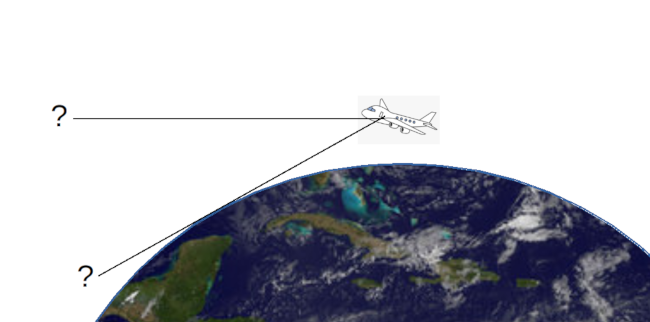
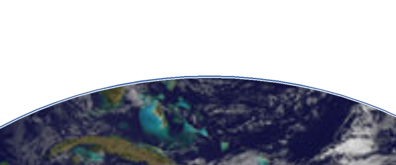
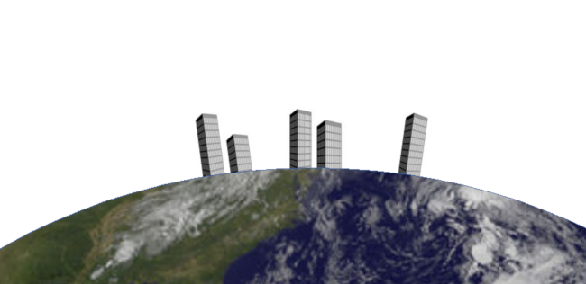
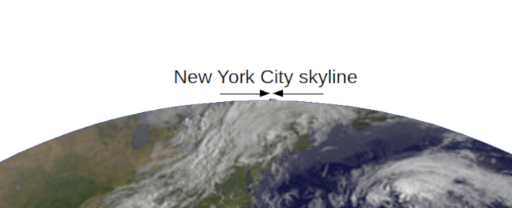

How flat-earthers use misrepresentations of scale to promote their ideas
 I'm not just picking on the flat-earthers because I like fishing in a barrel.
The misrepresentations that the flat-earthers use to
promote their ideas are also widely used in advertising, politics,
and other mainstream activities.
It's good to be aware of these tactics, whichever domain they're used in,
so as not to be fooled.
I'm not just picking on the flat-earthers because I like fishing in a barrel.
The misrepresentations that the flat-earthers use to
promote their ideas are also widely used in advertising, politics,
and other mainstream activities.
It's good to be aware of these tactics, whichever domain they're used in,
so as not to be fooled.
Misrepresentations of scale work by drawing diagrams that are not to scale, and then drawing conclusions from them as if they were to scale. It's perfectly commonplace to use diagrams that are not to scale; often it's impossible to avoid doing so because the objects represented are so different in size. For example, diagrams of the Solar System rarely show the Sun and planets to scale: the radius of the Sun is more than one hundred times that of the Earth. The same applies to diagrams of chemical structure -- the distances between particles are astronomically larger than the size of those particles.
While it's perfectly reasonable to manipulate scale for explanatory purposes, it has to be done carefully so as not to be misleading.
Here's the first flat-earth example. The horizon, the flat-earthers claim, is always at eye level. Whether you're at sea level or 30,000 feet above the earth in a jet airliner, the horizon always seems to be at eye level. I think we can all agree that this is broadly true. But how can it be, if the Earth is a sphere? Here is the diagram that the flat-earthers would have us believe represents the situation.

If the plane is at 30,000 feet, why don't we have to look down at the horizon?
Drawn this way, it really does look as if you'd have to be looking down, to see the Earth far below. And, of course, 30,000 feet is a very long way up. Surely we'd expect to see the curvature of the Earth from that height? But we don't and, therefore, the earth is flat.
The error in this presentation has to do with representation of distance. If the distance from the plane to the Earth were to the same scale as the radius of the Earth, the plane would be in low-earth orbit. Also, it would be the size of Australia but that, in itself, isn't a problem -- it's angles that are being misrepresented here, not sizes.
The picture below is my attempt to draw the trajectory of the plane to the same scale as the curvature of the earth. The trajectory is the thin black line just above the Earth's surface. The At 30,000 ft, the plane actually describes a path that is a circle about 0.1% larger than the radius of the Earth's surface. It's actually hard to draw this line perfectly to scale, given the limitations of drawing software, and the size of a screen pixel.

What the trajectory of a plane at 30,000 feet looks like to scale
Where is the plane itself in this diagram? Well, it's not shown, because the entire airline fleet would fit into a single screen pixel.
At this scale it's easy to see that, although the horizon is, in fact, below eye level for the airplane passenger, it's only just below. The deception in the flat-earthers' presentation is to overstate this effect, by drawing the radius of the Earth and the height of the plane to different scales.
Here's another example The New York skyline is, if we're being generous, about 30 miles long. That's assuming that there's nothing to interrupt the view which, of course, is not true. But, for simplicity, let's assume that it really is 30 visible miles. 30 miles is a long way so, if the Earth is a sphere, buildings at the ends of that distance should be noticeably leaning away from one another. They clearly aren't, so the earth is flat. This is how the flat-earthers would have us view the situation:

If the skyline is 30 miles wide, why don't the buildings appear to be leaning?
I should point out that it isn't a misrepresentation that the buildings in this picture would, if they were to scale, stand tens of miles tall. Nobody -- not even the flat-earthers -- is claiming that the size of the buildings is to scale. The misrepresentation is in the size of the skyline. If it were to scale, the buildings in the picture would cover an area about two thousand miles across. The New York skyline might be impressively long, but it's not two thousand miles long.
Buildings that are two thousand miles apart on a spherical earth with a radius about 6000 miles would, indeed, be learning away from one another, at an angle of perhaps 30 degrees. Of course, you'd never see that, because we can't see two for thousand miles. Here's what the 30-mile skyline looks like when its width is drawn to scale:

A 30-mile width, drawn to scale
A distance of 30 miles is about 0.1% of the circumference of the Earth. It's a distance that's just about large enough to show on the diagram but, over that distance, the surface of the Earth is essentially flat. The buildings at opposite ends of the skyline are, in fact, learning away from one another -- by about half a degree. That's not an effect that will be visible.
Both the examples I've shown here rely for their impact on demonstrating an effect that is, in fact, present -- but to an extent that is hugely smaller than scaling of the diagram would suggest. The horizon is, in fact, below the eye level of the airline passenger. Buildings seen on a skyline do, in fact, lean away from one another. The reason we don't see notice these things is not because the Earth is flat, but because they are infinitessimally tiny.
It isn't wrong to draw a diagram that is not to scale; sometimes it is convenient. Convenience turns into deception, though, when the scale that is manipulated is precisely the one that forms the basis of an argument. If you've ever been on an airline flight where there are screens that show the position of the plane on a map, you might have wondered how large the plane would be, if it was to the scale of the map. Well, that's the kind of thing I wonder about, anyway. But it's irrelevant -- what the map is showing is where the plane is, not how large it is. If the plane were shown to map scale, you'd need a microscope to see it on the display. A scale distortion of this kind is both harmless and helpful.
In the flat-earth examples, though, the sizes that are misrepresented are precisely the ones that are important -- the height of the plane, and the width of the skyline. These distortions of scale are not used to assist the viewer, but to deceive. We perhaps don't spot this immediately, because we are so used to scale distortions being used in a helpful way.